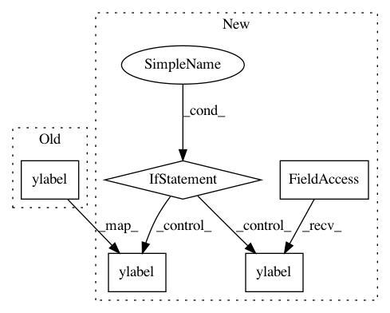

38f6e534ba9546f00b38830ef44e6f9eb7c47199,scanpy/plotting/preprocessing.py,,filter_genes_dispersion,#Any#Any#Any#Any#,11
Before Change
pl.ylim(y_min, 1.05*np.max(dispersions))
pl.legend()
pl.xlabel(("$log_{10}$ " if False else "") + "mean expression of gene")
pl.ylabel(("$log_{10}$ " if False else "") + "dispersion of gene"
+ (" (normalized)" if id == 0 else " (not normalized)"))
utils.savefig_or_show("filter_genes_dispersion", show=show, save=save)
After Change
pl.legend()
pl.xlabel(("$log_{10}$ " if False else "") + "mean expression of gene")
if id == 0:
pl.ylabel(("$log_{10}$ " if False else "") + "dispersion of gene"
+ (" (normalized)"))
utils.savefig_or_show("filter_genes_dispersion_normalized", show=show, save=save)
else:
pl.ylabel(("$log_{10}$ " if False else "") + "dispersion of gene"
+ (" (not normalized)"))
utils.savefig_or_show("filter_genes_dispersion", show=show, save=save)
In pattern: SUPERPATTERN
Frequency: 3
Non-data size: 5
Instances
Project Name: theislab/scanpy
Commit Name: 38f6e534ba9546f00b38830ef44e6f9eb7c47199
Time: 2018-02-07
Author: jorvis@gmail.com
File Name: scanpy/plotting/preprocessing.py
Class Name:
Method Name: filter_genes_dispersion
Project Name: BindsNET/bindsnet
Commit Name: 83b52b71a5245d241fedaeb7121d95157763a3f2
Time: 2019-07-27
Author: danjsaund@gmail.com
File Name: bindsnet/analysis/plotting.py
Class Name:
Method Name: plot_voltages
Project Name: theislab/scanpy
Commit Name: 8ae527b26368f10e14792fd176b39815675501c8
Time: 2017-09-18
Author: f.alex.wolf@gmx.de
File Name: scanpy/plotting/tools.py
Class Name:
Method Name: aga_path